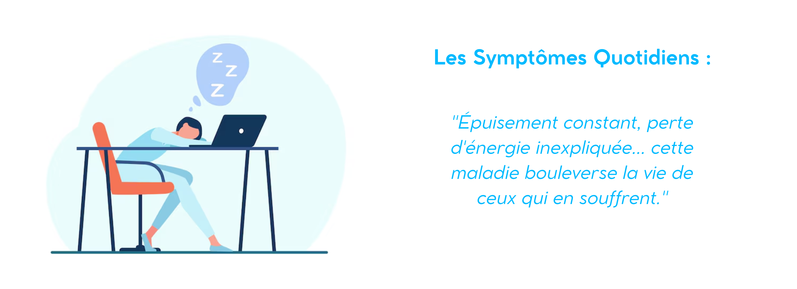
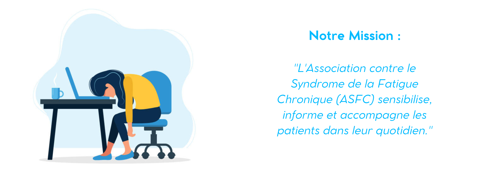
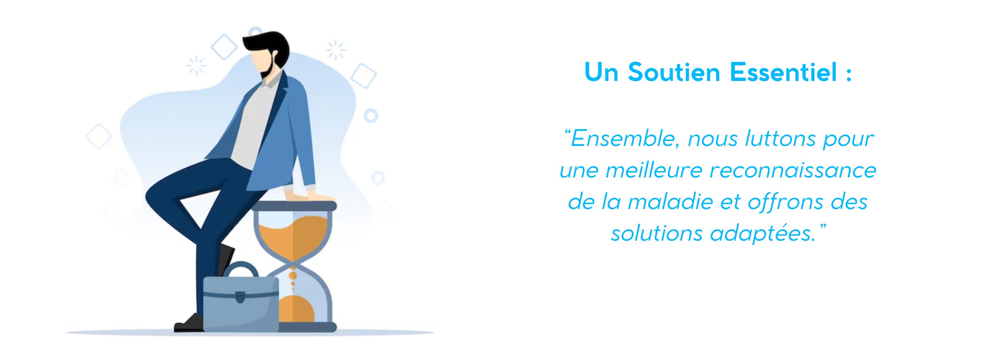
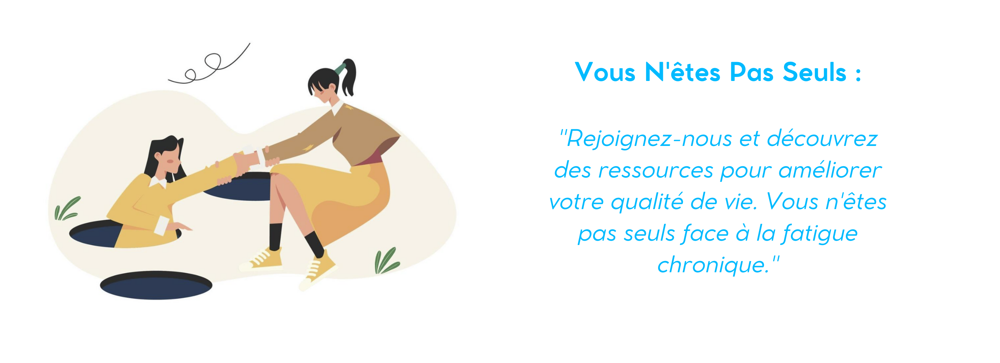
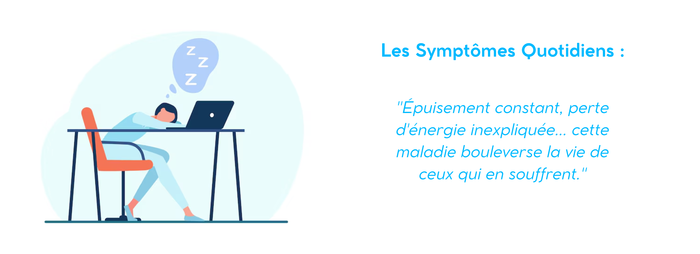
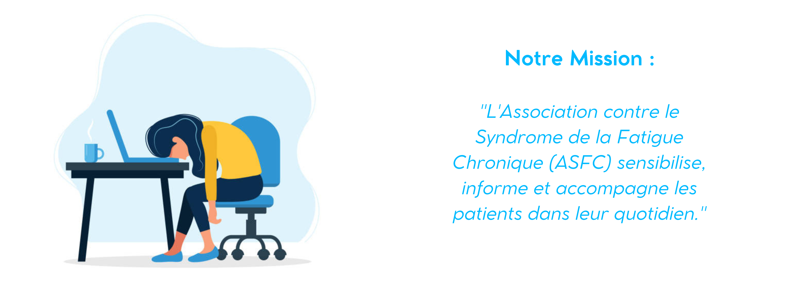
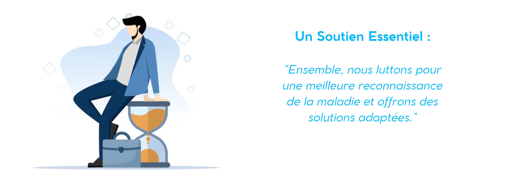
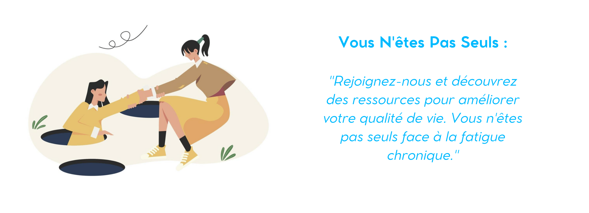
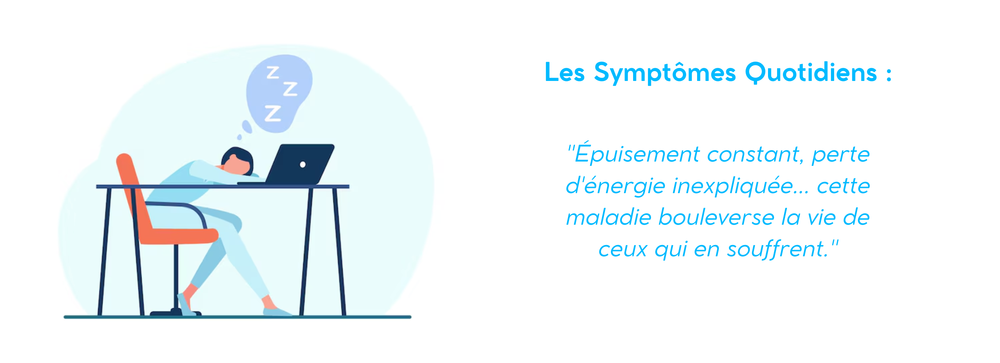
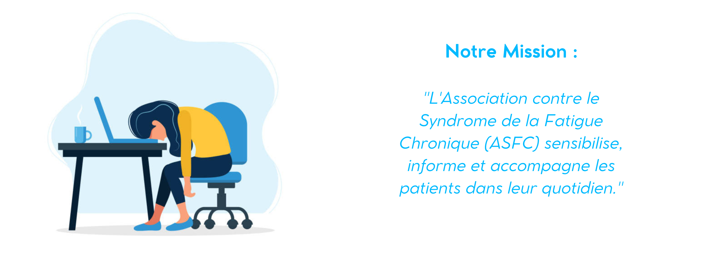
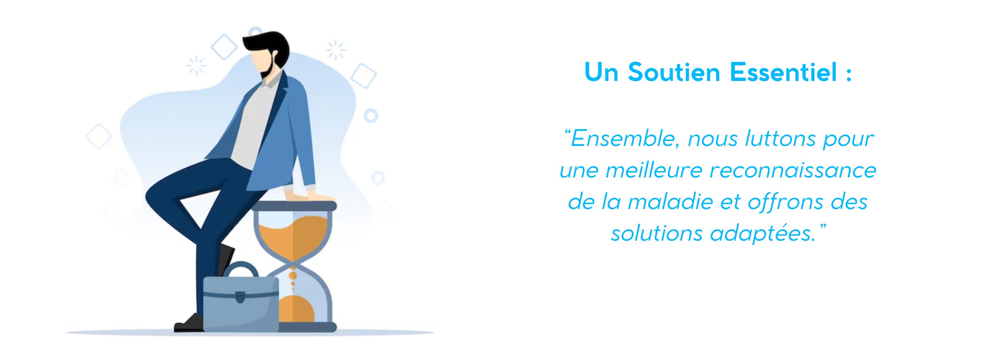
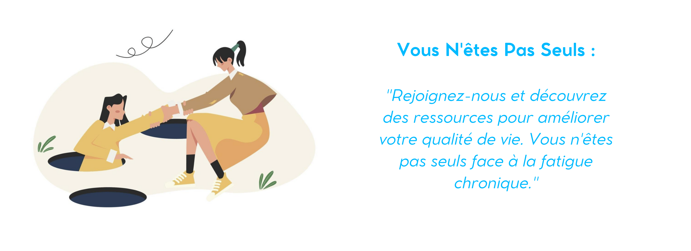
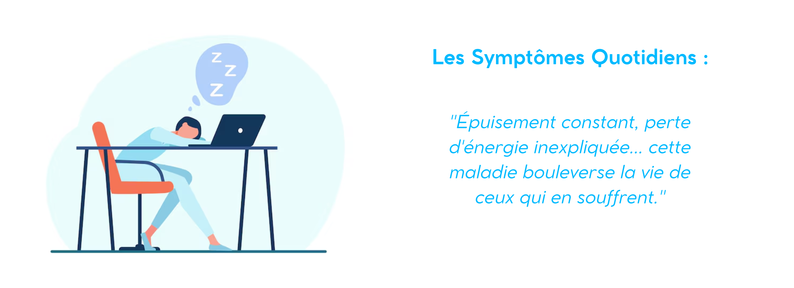
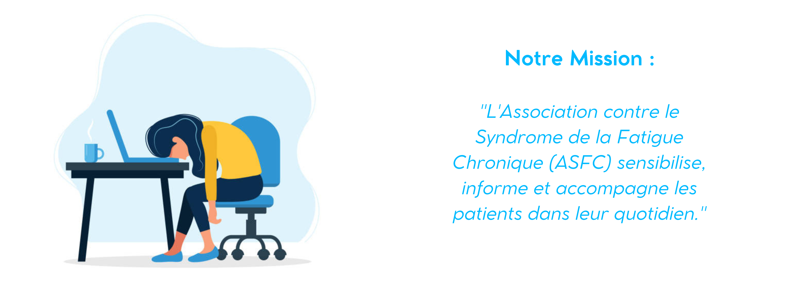
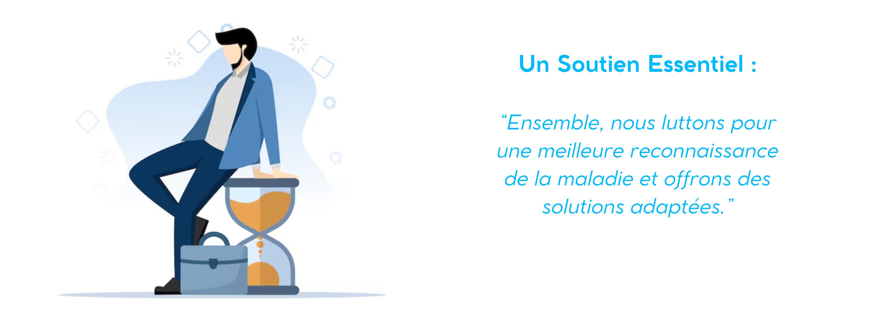
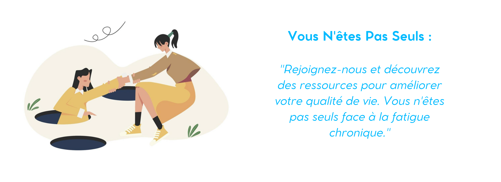
L'ASFC est à l'origine de la journée nationale des fatigues, qui se tient tous les 2 ans.
L'Association Française du Syndrome de Fatigue Chronique est une association loi de 1901 à but non lucratif, créée en 1998 etagréée au niveau national par le Ministère de la solidarité et de la Santé, depuis 2010, pour représenter les usagers du système de santé.
Elle est membre d'ALLIANCE MALADIES RARES (AMR), et des Assos Santé . Elle a été reconnue d'Intérêt Généralet à ce titre peut recevoir des dons .
Notre association a un statut national mais possède également des délégations régionales qui accueillent les malades souhaitant une information.
L'ASFC collabore au développement d'une solution thérapeutique avec une PME innovante spécialisée en médecine basée sur les mécanismes : Bio-Modeling Systems